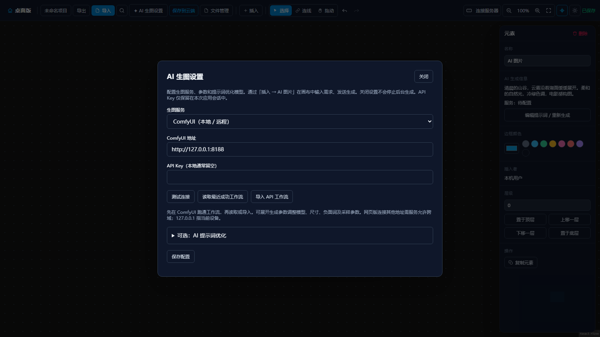

SuQCanvas
DESKTOP / 1.4.2
为灵感，留出空间
从灵感到画面。
在一张画布完成。
SuQCanvas 1.4.2 · 无限画布，继续进化


收集 · 组织 · 创作
01 / 07
把素材放到一起
让零散的灵感，产生联系。

02 / 07
1.4.2 / 画布内 AI 工作流
想画什么，
就在这里写。
插入 AI 图片，直接填写画面描述。
创作，从画布上的一个想法开始。
01插入 AI 图片
02描述想要的画面
03连接服务后发送生成

真实界面展示 · AI 生图需先配置生成服务
03 / 07
你的工具，自由连接
把熟悉的 AI，
带进工作流。
连接本地或远程 ComfyUI，
也支持 OpenAI 兼容 Images API。
可选提示词优化后台生成

模型与服务由用户自行配置
04 / 07
整理，也是一种创作
不只放在一起。
更能连成思路。
图片、视频、音频与文档同处一张画布。
用笔记和连线，把参考变成方向。
多媒体笔记连线
05 / 07
桌面版 / 本地工作区
灵感随时继续。项目留在手边。

本地自动保存 · .sqcanvas 导入导出 · 云端手动保存
06 / 07
把下一次灵感，变成作品
SuQCanvas
你的灵感，值得一整张画布。
探索 1.4.2 桌面版
无限画布AI 创作入口本地工作区
SuQCanvas 1.4.2 · 产品发布样片
07 / 07